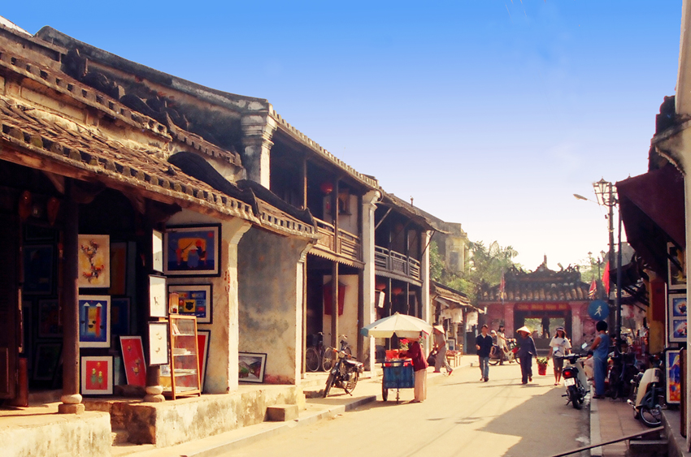
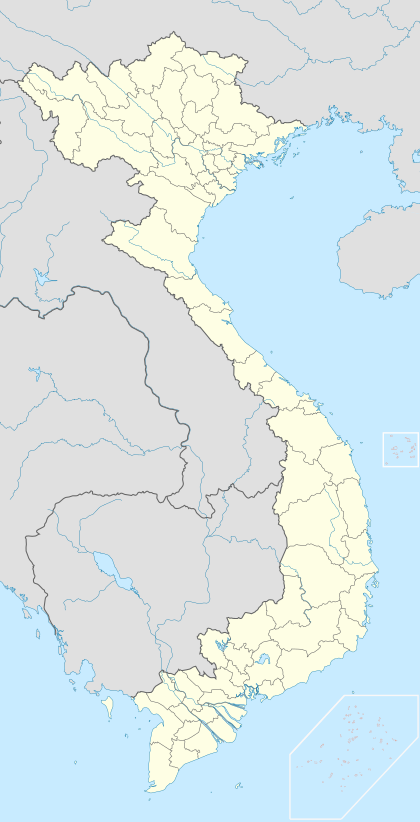

Chùa Cầu Chùa Cầu là viên ngọc giữa lòng Hội An. Cầu xây dựng vào cuối thế kỷ 16 và được gọi là cầu Nhật Bản. Ở giữa cầu có một ngôi miếu nhỏ thờ Huyền Thiên Đại Đế. Cầu có mái che khá độc đáo cùng các kết cấu, họa tiết trang trí thể hiện sự kết hợp hài hòa giữa các phong cách kiến trúc Việt, Hoa, Nhật, và cả phương Tây. Vị trí: Cầu bắc ngang con lạch chảy ra sông Thu Bồm giáp ranh giữa hai đường Nguyễn Thị Minh Khai và Trần Phú.

| Hội An | |
|---|---|
|  | |
Phố cổ Hội An |
|
| Thông tin địa điêm | |
| Vùng | Duyên Hải Nam Trung Bộ |
| Tỉnh | Quảng Nam |
| Thành Lập | 29/1/2008 |
| Địa Lý | |
|  | |